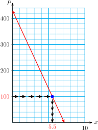
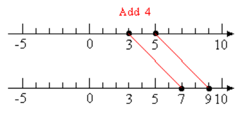
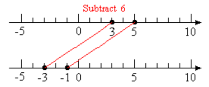
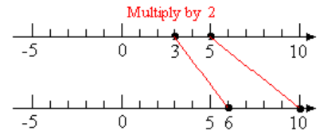
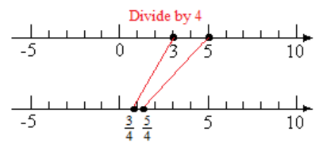
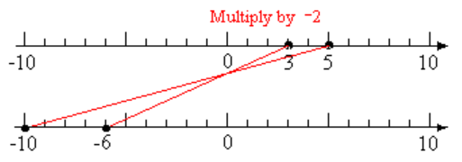
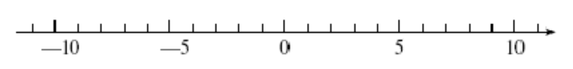

Section 2.4 Linear Equations and Inequalities
Subsection Solving Equations
We solve an equation by isolating the variable on one side of the equation. If an equation involves two or more operations, we must undo those operations in reverse order.
Example 2.22.
The equation
describes college tuition consisting of a $50 registration fee plus $15 per unit. How many units can you take if you have $290 saved for tuition?
We can answer the question by solving the equation
where we have substituted $290 for the tuition, \(T\text{.}\) Think about the expression \(50+15u\text{.}\) How would you evaluate this expression if you were given a value for \(u\text{?}\) Following the order of operations, you would
In order to solve the equation, we must reverse these two steps to undo the operations and isolate the variable. We first subtract 50 from both sides of the equation:
This isolates the term that contains the variable, \(15u\text{.}\) Then we divide both sides of the equation by 15.
You can enroll in 16 units. We can check the solution by substituting 16 for \(u\) in the original equation.
Because a true statement results, the solution checks.
Look Closer.
In Example 2.22, notice how we reversed the operations used in the equation.
Strategy for solving equations.
To solve an equation that involves two or more operations, we undo those operations in reverse order.
Example 2.23.
Solve \(~8-3x=-10\)
The left side of the equation has two terms: \(8\) and \(-3x\text{.}\) We want to isolate the term containing the variable, so we subtract 8 from both sides.
Next, we divide both sides by \(-3\) to get
The solutions is 6.
Caution 2.24.
In the second step of Example 2.23, the term \(-3x\) means "\(-3\) times \(x\text{,}\)" so we divide both sides by \(-3\text{.}\) Do not try to add 3 to both sides.
Reading Questions Reading Questions
1.
If an equation involves more than one operation, how must we undo those operations?
In reverse order
2.
Delbert says he solved the equation \(-5x=15\) by adding \(5\) to both sides. What is wrong with his method?
He should divide by \(-5\text{.}\)
Subsection Applied Problems
Problem solving often involves signed numbers, either in the equation that models the problem or in its solution, or both.
Example 2.25.
The trout population in Clear Lake is decreasing by approximately 60 fish per year, and this year there are about 430 trout in the lake. If the population drops to 100, the Park Service will have to restock the lake.
Write an equation for the population \(P\) of trout \(x\) years from now.
When will the Park Service have to restock the lake?
Graph your equation for \(P\text{,}\) and illustrate your answer to part (b) on the graph.
The population starts this year at 430, and decreases by 60 for each following year. Thus, \(P=430-60x\text{.}\)
We would like to find the value of \(x\) when \(P=100\text{.}\) We substitute 100 for \(P\text{,}\) and solve the equation for \(x\text{.}\)
\begin{align*} 100 ~~\amp = ~~~430-60x \amp \amp \blert{\text{Subtract 430 from both sides.}}\\ \underline{\blert{-430}} \amp = \underline{\blert{-430}}\\ -330 ~~\amp = -60x \\ \hphantom{0000}\\ \dfrac{-330}{\blert{-60}} \amp = \dfrac{-60x}{\blert{-60}} \amp \amp \blert{\text{Divide both sides by}~-60.}\\ 5.5 \amp = x \end{align*}The Park Service will have to restock the lake in five and a half years, if the population continues to decline at the current rate.- The figure shows the graph of the equation \(P=430-60x\text{.}\) To solve\begin{equation*} 100=430-60x \end{equation*}we locate the point on the graph with \(P=100\text{,}\) and read its \(x\)-coordinate, at about 5.5.
Subsection Solving Inequalities
Inequality.
A statement that uses one of the symbols \(\gt\) or \(\lt\) is called an inequality.
Examples of inequalities are
Unlike the equations we have studied, which have at most one solution, an inequality can have infinitely many solutions. A solution of an equation or inequality is said to satisfy the equation or inequality.
Example 2.26.
Solve the inequality \(~x \lt 2\)
The solutions include \(1, 0, -1, -2\) and all the other negative integers, as well as fractions less than 2, such as \(1\dfrac{3}{5},~ \dfrac{2}{3},\) and \(\dfrac{-17}{8}\text{.}\) All of these values satisfy the inequality \(~x \lt 2\text{.}\)
In fact, all the numbers to the left of 2 on the number line are solutions of \(~x \lt 2\text{.}\) Because we cannot list all these solutions, we often graph them on a number line as shown below.
Look Closer.
An inequality that uses the symbol for less than, \(\lt\text{,}\) or greater than, \(\gt\text{,}\) is called a strict inequality. A nonstrict inequality uses one of the following symbols.
For example, the graph of all solutions to the inequality
is shown below. We use a solid dot at \(-2\) to show that \(-2\) is included in the solutions.
Reading Questions Reading Questions
3.
A solution of an inequality is said to the inequality.
satisfy
4.
What is the difference between a strict and a nonstrict inequality?
A nonstrict inequality includes "equal to."
The rules for solving inequalities are very similar to the rules for solving equations, with one important difference. In the Activities we will develop the following strategies for solving inequalities.
To solve an inequality.
We can add or subtract the same quantity on both sides.
We can multiply or divide both sides by the same positive number.
If we multiply or divide both sides by a negative number, we must reverse the direction of the inequality.
Example 2.27.
Solve \(~-3x+1 \gt 7,~\) and graph the solutions on a number line.
We isolate on one side of the inequality.
The graph of the solutions is shown below.
Subsection Compound Inequalities
An inequality in which the variable expression is bounded from above and from below is called a compound inequality For example,
is a compound inequality. To solve a compound inequality, we must perform the steps needed to isolate \(x\) on all three sides of the inequality.
Example 2.28.
Solve \(~-3 \lt 2x-5 \le 6\)
To solve for \(x\text{,}\) we first add 5 on each side of the inequality symbols.
Next, to solve \(2 \lt 2x \le 11\text{,}\) we divide each side by 2.
The solution consists of all numbers greater than 1 but less than or equal to \(\dfrac{11}{2}\text{.}\) The graph of the solutions is shown below.
Reading Questions Reading Questions
5.
When do we need to reverse the direction of an inequality?
When we multiply or divide by a negative number.
6.
What is a compound inequality?
One in which the variable expression is bounded from above and from below.
Subsection Skills Warm-Up
Exercises Exercises
Exercise Group.
Solve each equation. Try to do so mentally (without using pencil and paper.)
1.
\(\dfrac{u}{3}=6\)2.
\(7=3+s\)3.
\(a-\dfrac{1}{3}=\dfrac{2}{3}\)4.
\(20=5m\)5.
\(\dfrac{1}{4}p=8\)6.
\(7t=5\)Exercise Group.
Fill in the tables. Then analyze the order of operations in your calculations.
| Table 1 | ||
| \(n\) | \(3n\) | \(3n-5\) |
| \(2\) | \(\hphantom{0000}\) | \(\hphantom{0000}\) |
| \(5\) | \(\hphantom{0000}\) | \(\hphantom{0000}\) |
| \(\hphantom{0000}\) | \(\hphantom{0000}\) | \(7\) |
| \(\hphantom{0000}\) | \(\hphantom{0000}\) | \(22\) |
| Table 2 | ||
| \(m\) | \(\dfrac{m}{4}\) | \(\dfrac{m}{4}+1\) |
| \(8\) | \(\hphantom{0000}\) | \(\hphantom{0000}\) |
| \(12\) | \(\hphantom{0000}\) | \(\hphantom{0000}\) |
| \(\hphantom{0000}\) | \(\hphantom{0000}\) | \(6\) |
| \(\hphantom{0000}\) | \(\hphantom{0000}\) | \(2\) |
7.
Consider the equation \(3n-5=p\text{.}\) Look at Table 1 to help you answer the questions:
Let \(n=2\text{.}\) Explain how to find \(p\) in two steps.
Let \(p=7\text{.}\) Explain how to find \(n\) in two steps.
8.
Consider the equation \(\dfrac{m}{4}+1=h\text{.}\) Look at Table 2 to help you answer the questions:
Let \(m=8\text{.}\) Explain how to find \(h\) in two steps.
Let \(h=6\text{.}\) Explain how to find \(m\) in two steps.
9.
If you put on socks and then put on shoes, what operations are needed to reverse the process?
You leave home and bicycle north for 3 miles and then east for 2 miles. Suddenly you notice that you have dropped your wallet. How should you retrace your steps?
Subsubsection Answers to Skills Warm-Up
\(\displaystyle 18\)
\(\displaystyle 4\)
\(\displaystyle 1\)
\(\displaystyle 4\)
\(\displaystyle 32\)
\(\displaystyle \dfrac{5}{7}\)
Subsection Lesson
Subsubsection Activity 1: Order of Operations
Exercises Exercises
Exercise Group.
Study each Example, then try the corresponding Exercise.
Use the order of operations to analyze the expression containing the variable and plan your approach.
Carry out the steps of the solution.
1.
Example: Solve \(~~4x-5=7\)
-
Analyze the expression \(~4x-5\text{.}\)
\begin{align*} \amp \blert{\text{Operations performed on}~x} \amp \amp \blert{\text{Steps for solution}}\\ \amp 1.~~~ \text{Multiply by 4} \amp \amp 1.~~~ \text{Add 5}\\ \amp 2.~~~ \text{Subtract 5} \amp \amp 2.~~~\text{Divide by 4} \end{align*} -
Carry out the solution.
\begin{align*} 4x-5 \amp = 7 \amp \amp \blert{\text{Add 5 to both sides.}}\\ 4x-5 \alert{+ 5} \amp = 7 \alert{+ 5}\\ 4x \amp = 12 \amp \amp \blert{\text{Divide both sides by 4.}}\\ \dfrac{4x}{\alert{4}} \amp = \dfrac{12}{\alert{4}}\\ x \amp = 3 \end{align*}The solutions is 3. \(~~~~~~~~\blert{\text{Check:}}~~~~4(\alert{3}) - 5 =7\)
Now try the Exercise: Solve \(~~3x+2 = 17\)
2.
Example: Solve \(~~\dfrac{-3t}{4} = 6\)
-
Analyze the expression \(~4x-5\text{.}\)
\begin{align*} \amp \blert{\text{Operations performed on}~x} \amp \amp \blert{\text{Steps for solution}}\\ \amp 1.~~~ \text{Multiply by}~-3 \amp \amp 1.~~~ \text{Multiply by 4}\\ \amp 2.~~~ \text{Divide by 4} \amp \amp 2.~~~\text{Divide by} ~-3 \end{align*} -
Carry out the solution.
\begin{align*} \dfrac{-3t}{4} \amp = 6 \amp \amp \blert{\text{Multiply both sides by 4.}}\\ \alert{4}\left(\dfrac{-3t}{4}\right) \amp = (6) \alert{4}\\ -3t \amp = 24 \amp \amp \blert{\text{Divide both sides by}~-3}\\ \dfrac{-3t}{\alert{-3}} \amp = \dfrac{24}{\alert{-3}}\\ x \amp = 3 \end{align*}The solutions is \(-8\text{.}\) \(~~~~~~~~\blert{\text{Check:}}~~~~\dfrac{-3(\alert{-8})}{4} = 6\)
Now try the Exercise: Solve \(~~\dfrac{-4a}{5} = -12\)
3.
Example: Solve \(~~5(z-6) = 65\)
-
Analyze the expression \(~4x-5\text{.}\)
\begin{align*} \amp \blert{\text{Operations performed on}~x} \amp \amp \blert{\text{Steps for solution}}\\ \amp 1.~~~ \text{Subtract 6} \amp \amp 1.~~~ \text{Divide by 5}\\ \amp 2.~~~ \text{Multiply by 5} \amp \amp 2.~~~\text{Add 6} \end{align*} -
Carry out the solution.
\begin{align*} 5(z-6) \amp = 65 \amp \amp \blert{\text{Divide both sides by 5.}}\\ \dfrac{5(x-6)}{\alert{5}} \amp = \dfrac{65}{\alert{5}}\\ z-6 \amp = 13 \amp \amp \blert{\text{Add 6 to both sides.}}\\ z-6 \alert{+6} \amp = 13 \alert{+6}\\ z \amp = 19 \end{align*}The solutions is \(19\text{.}\) \(~~~~~~~~\blert{\text{Check:}}~~~~5(\alert{19}-6) = 65\)
Now try the Exercise: Solve \(~~\dfrac{b+3}{4} = 6\)
4.
Follow the steps to solve the equation \(~~-6-\dfrac{2x}{3} = 8\)
\(\blert{\text{Add 6 to both sides.}}\)
\(\blert{\text{Rewrite the fraction} ~\dfrac{-2x}{3}~ \text{in standard form.}}\)
\(\blert{\text{Multiply both sides by 3.}}\)
\(\blert{\text{Divide both sides by}~ -2.}\)
\(\blert{\text{Check your solution.}}\)
Subsubsection Activity 2: Problem Solving
Exercises Exercises
1.
Mitch bought a Blu-Ray player for $269 and a number of discs at $14 each.
Write an equation for Mitch's total bill, \(B\text{,}\) in terms of the number of discs, \(d\text{,}\) he bought.
-
If the total bill before tax was $367, how many discs did Mitch buy?
\blert{\text{Substitute 367 for}~B~\text{and solve for}~d.}
\blert{\text{Write your answer in a sentence.}}
2.
Home Station had a promotion offering $4 off on a gallon of house paint.
Write an equation for the cost, \(C\text{,}\) of 15 gallons of paint in terms of the regular price, \(p\text{.}\)
Randall bought 15 gallons and paid $480 before tax. What is the regular price of a gallon of paint?
Subsubsection Activity 3: Inequalities
Exercises Exercises
1.
Properties of Inequalities
Start with an inequality that we know is true, say \(\blert{3 \lt 5}\text{.}\) Which of the following operations keeps the inequality true?
Add a positive number, say 4, to both sides of the inequality, to get
\begin{align*} 3 \blert{+4} \amp \lt 5 \blert{+4}\\ 7 \amp \lt 9 \end{align*}Subtract the same quantity, say 6, from both sides of the inequality, to get
\begin{align*} 3 \blert{-6} \amp \lt 5 \blert{-6}\\ -3 \amp \lt -1 \end{align*}Multiply both sides of the inequality by a positive number, say 2, to get
\begin{align*} \blert{2}(3) \amp \lt \blert{2}(5)\\ 6 \amp \lt 10 \end{align*}Divide both sides of the inequality by a positive number, say 4, to get
\begin{align*} \dfrac{3}{\blert{4}} \amp \lt \dfrac{5}{\blert{4}} \end{align*}Multiply both sides of the inequality by a negative number, say \(-2\text{,}\) to get
\begin{align*} \blert{-2}(3) \amp \lt \blert{-2}(5)\\ -6 \amp \lt -10~~~~~~~~\blert{\text{False!}} \end{align*}
2.
Complete the box:
If we or both sides of an inequality by the same quantity, we must the direction of the inequality.
3.
Fill in the correct symbol, \(\lt\) or \(\gt\text{,}\) in each statement.
If \(~~x \gt 8~\text{,}\) then \(~~x-7~ \underline{\hspace{2.272727272727273em}}~ 1.\)
If \(~~x \lt -4~\text{,}\) then \(~~3x~ \underline{\hspace{2.272727272727273em}}~ -12.\)
If \(~~x \gt -2~\text{,}\) then \(~~-9x~ \underline{\hspace{2.272727272727273em}}~ 18.\)
4.
Solving inequalities
- \(\dfrac{x}{4} \ge -2\)
\(\blert{\text{What should you do to isolate}~x ?}\)
\(\blert{\text{Should you reverse the direction of the inequality?}}\)
Check: Is your answer reasonable?
Is \(~-12~\) a solution?
Is \(~-5~\) a solution?
- \(-5x \gt 20\)
\(\blert{\text{What should you do to isolate}~x ?}\)
\(\blert{\text{Should you reverse the direction of the inequality?}}\)
Check: Is your answer reasonable?
Is \(~-10~\) a solution?
Is \(~2~\) a solution?
-
Solve \(~~5-2x \le -3~~\) and graph the solutions on the number line.
 -
Solve \(~~-8 \lt 4-3x \lt 10~~\) and graph the solutions on the number line.
Subsubsection Wrap-Up
Objectives.
In this Lesson we practiced the following skills:
Solving equations with two or more operations
Writing equations to model applied problems
Solving inequalities
Questions.
To solve an equation, in what order do we undo the operations?
Which operation does a fraction bar represent?
When we evaluate the expression \(~5(z-6)~\text{,}\) which operation do we perform first?
When should you reverse the direction of an inequality?
Subsection Homework Preview
Exercises Exercises
Exercise Group.
Solve
1.
\(~~12=\dfrac{x}{6}\)2.
\(~~\dfrac{5a}{3} = 20\)3.
\(~~2(10z+18) = 96\)4.
\(~~8-b=-3\)5.
\(~~-2t+18=-4\)6.
\(~~7-\dfrac{2m}{3} = -9\)7.
\(~~8-4x \gt -2\)8.
\(~~-6 \le \dfrac{4-x}{3} \lt 2\)Subsubsection Answers to Homework Preview
\(\displaystyle 72\)
\(\displaystyle 12\)
\(\displaystyle 3\)
\(\displaystyle 11\)
\(\displaystyle 11\)
\(\displaystyle 24\)
\(\displaystyle x \lt \dfrac{5}{2}\)
\(\displaystyle 22 \ge x \gt -2\)
Exercises Homework 2.4
Exercise Group.
Fill in the table in Problems 1–2. Use two steps for each row: Fill in the middle column first. Then use the table to help you answer the questions.
1.
| \(x\) | \(2x\) | \(2x+4\) |
| \(3\) | \(\hphantom{0000}\) | \(\hphantom{0000}\) |
| \(6\) | \(\hphantom{0000}\) | \(\hphantom{0000}\) |
| \(\hphantom{0000}\) | \(\hphantom{0000}\) | \(14\) |
| \(\hphantom{0000}\) | \(\hphantom{0000}\) | \(20\) |
Consider the equation \(y=2x+4\text{.}\)
Let \(x=3\text{.}\) Explain how to find \(y\) in two steps.
Let \(y=14\text{.}\) Explain how to find \(x\) in two steps.
2.
| \(q\) | \(q-3\) | \(5(q-3)\) |
| \(3\) | \(\hphantom{0000}\) | \(\hphantom{0000}\) |
| \(\hphantom{0000}\) | \(\hphantom{0000}\) | \(10\) |
| \(4\) | \(\hphantom{0000}\) | \(\hphantom{0000}\) |
| \(\hphantom{0000}\) | \(\hphantom{0000}\) | \(20\) |
Consider the equation \(5(q-3)=R\text{.}\)
Let \(q=3\text{.}\) Explain how to find \(R\) in two steps.
Let \(R=10\text{.}\) Explain how to find \(q\) in two steps.
Exercise Group.
For Problems 3–17, solve.
3.
\(6x-13=5\)4.
\(\dfrac{2a}{5}=8\)5.
\(\dfrac{x}{4}+2=3\)6.
\(6x+5=5\)7.
\(24=4(p-7)\)8.
\(0=\dfrac{5z}{7}\)9.
\(\dfrac{k+4}{5}=9\)10.
\(\dfrac{2x}{3}-5=7\)11.
\(7=\dfrac{4b-3}{3}\)12.
\(3c-7=-13\)13.
\(-5=-2-3t\)14.
\(-3(2h-6)=-12\)15.
\(1-\dfrac{b}{3}=-5\)16.
\(\dfrac{3y}{5}+2=-4\)17.
\(\dfrac{5x}{2}+10=0\)Exercise Group.
For Problems 18–19, solve.
18.
\(11.8w-37.8=120.32\)19.
\(9.7(2.6+v)=58.2\)Exercise Group.
For Problems 20–28,
Solve each inequality algebraically.
Graph your solutions on a number line.
Give at least one value of the variable that is a solution, and one value that is not a solution.
20.
\(x+10 \le 5\)21.
\(-3y \lt 15\)22.
\(\dfrac{x}{3} \le 4\)23.
\(2x+3 \gt 7\)24.
\(-3x+2 \le 11\)25.
\(-3 \gt \dfrac{2x}{3}+1\)26.
\(-3 \le 3x \le 12\)27.
\(23 \gt 9-2b \ge 13\)28.
\(-8 \le \dfrac{5w+3}{4} \lt -3\)29.
Delbert is thinking of a number. If he multiplies the number by 5 and then subtracts 6, the result is 29. What is the number?
Exercise Group.
For Problems 30–31, find the error in the "solution," then write a corrected solution.
30.
\(\begin{aligned}[t] 6-3x \amp = -12\\ -3x \amp = -6\\ x \amp = 2 \end{aligned}\)
31.
\(\begin{aligned}[t] -2+\dfrac{2}{3}x \amp = -4\\ -2+2x \amp = -12\\ 2x \amp = -10 \\ x \amp =-5 \end{aligned}\)
Exercise Group.
For Problems 32–33, use the graphs to answer the questions.
32.
Francine's new puppy weighed 3.8 pounds when she brought it home, and it should gain approximately 0.6 pound per week. The graph shows the puppy's weight, \(W\text{,}\) after \(t\) weeks.
Estimate the puppy's weight after 8 weeks.
Estimate how long it will take for the puppy to reach 26 pounds.
Write an algebraic equation for \(W\) in terms of \(t\text{.}\)
Write and solve an equation to verify your answer to part (b).
33.
Marvin's telephone company charges $13 a month plus $0.15 per minute. The graph shows Marvin's phone bill, \(P\text{,}\) if he talks for \(m\) minutes.
Estimate Marvin's phone bill if he talks for 45 minutes.
Estimate the number of minutes Marvin talked if his phone bill is $25.
Write an algebraic equation for \(P\) in terms of \(m\text{.}\)
Write and solve an equation to verify your answer to part (b).
Exercise Group.
For Problems 34–38,
Choose a variable for the unknown quantity.
Write an equation that involves your variable.
Solve your equation, and answer the question.
34.
Simona bought a car for $10,200. She paid $1200 down and will pay the rest in 36 monthly installments. How much is each installment? (Hint: Write an equation about the total amount Simona pays.)
35.
Every school day, each member of the cross-country team runs a certain distance , which is assigned on the basis of ability, plus a half mile around the track. Greta runs 22.5 miles per week. What is her assigned distance? (Hint: Write an equation about the total distance Greta runs in one school week.)
36.
The Tree People planted new trees in an area that was burned by brush fires. 60% of the seeds sprouted, but gophers ate 38 of the new sprouts. That left 112 new saplings. How many seeds were planted? (Hint: Write an equation about the number of seeds that survived.)
37.
During a four-day warming trend, the temperature rose from \(-6 \degree\) to \(26 \degree\text{.}\) What was the average change in temperature per day?
38.
Eric is on a diet to reduce his current weight of 196 pounds to 162 pounds. If he loses 4 pounds per week, how long will it take him to reach his desired weight?
Exercise Group.
Use one of the formulas below to solve Problems 39–40.
39.
A farmer has 500 yards of fencing material to enclose a rectangular pasture. He would like the pasture to be 75 yards wide. How long will it be?
40.
A triangular sail requires 12 square meters of fabric. If the base of the sail measures 4 meters, how tall is the sail?
Exercise Group.
For Problems 41–42, write and solve an equation to find the value of \(x\text{.}\)